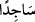
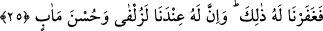

geldikçe açıklandığı ifâdelerinde yaptıkları gibi “Rabbinden mağfiret dileyerek eğilip
secdeye kapandı”
(__WORD__) lafzı, -secde etme fiili için eğilme (rukû) fiili kullanılmak sûretiyle,- (__WORD__)
anlamındadır. Çünkü secdeden önce eğilinir ve eğilmeden secde edilmiş olunmaz.
Secde ve rukûdan herbirinde eğilme ve boyun eğme anlamları vardır. Ebû Hanife (r.h.)
ve talebeleri secde-i tilâvette, eğilmenin secde yerine geçtiği şeklindeki görüşlerine bu
ifâdeyi delil göstermişlerdir.
Ya da eğilerek yâni namaz kılarak secdeye kapandı, anlamında olabilir ki bu ihtimale
göre namazın bir parçası zikredilerek tamamı kasdedilmiş olur. Dâvûd, bir nevi iki
istiğfar rek’ati kılmak maksadıyle iftitah tekbiri aldı, anlamındadır. Birinci görüşün yâni
âyetteki rükû’un secde etme anlamında olduğunun delili, İbn Abbâs’ın (r.a.) şu
rivâyetidir: Hz. Peygamber şükür secdesini ve Sâd Sûresi’ndeki secde-i tilâveti edâ
ederken şöyle duâ ederdi: “Allahım! Bu secde karşılığında katında bana bir mükâfat
yaz; katında bunu benim için azık eyle; onun sâyesinde bir günahımı azalt; kulun
Dâvûd’un secdesini kabul ettiğin gibi, benimkini de kabul et.”[12]
Dâvûd, ayak sürçmesi, evlâ ve efdal olanı terketme anlamındaki bütün
muhâlefetlerinden “tevbe edip Allah’a yöneldi.” Zira ebrâr/iyi insanlar için
hasene/güzel olan davranışlar, mukarrabîn/gözde kullar için seyyie/kötü sayılırlar.
Sâd Sûresi’ndeki secdeyi yaparken Peygamber Efendimiz’in (s.a.) şöyle dediği de
yine İbn Abbâs (r.a.) kanalıyla rivâyet edilmektedir: “Dâvûd bu secdeyi tevbe etmek
için yapmıştı, biz ise şükretmek için yapıyoruz.”
Fethu’r-Rahmân’da der ki: Ebû Hanife (r.h.) ve Mâlik (r.h.), bu secdenin, yapılması
gerekli secdelerden olduğu kanâatindedirler. Her ikisi de bunun aslî bir secde olduğu
görüşünde olmakla birlikte, Ebû Hanife bunun “vacip” olduğunu söylerken, Mâlik
“efdal” olduğunu söyler. Şâfiî ve İbn Hanbel’e göre ise bu, namaz dışında yapılması
müstehap olan bir şükür secdesidir. Bu secdenin namaz içinde yapılması durumunda bu
iki imama göre secde bâtıl olmuş olur.
Kâşifî der ki: “İmam-ı Âzam’a göre bu secde, azîmet secdesidir. O, bu âyet
okunduğunda namazda ve namaz dışında secde edilmesi gerekir, der. İmâm Şâfiî’ye göre
ise burada secde etmek azîmetlerden (zorunlu işlerden) değildir. İmâm Ahmed’den bu
secde hakkında iki rivâyet gelmiştir. İmâm-ı Âzam’a göre bu, (Kur’ân’daki) onuncu
secdedir. el-Fütûhâtü’l-Mekkiyye isimli eserde buna “secde-i inâbet” yâni tevbe ve
Allah’a yöneliş secdesi adı verilmiş ve şöyle denmiştir: Buna nur makamında şükretme
secdesi adı verilir. Çünkü Dâvûd da bunu şükretmek için yapmıştı.”
25. Sonra bu tutumundan dolayı onu bağışladık. Kuşkusuz yanımızda onun yüksek